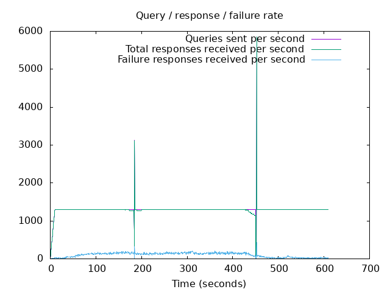

DNS Resolution Performance Testing Tool Version 2.14.0 [Status] Command line: resperf -P 20250620-0959.gnuplot -M doh -s 79.127.218.224 -O doh-uri=https://protective.joindns4.eu/dns-query -d domains_shuffled.list -C 50 -m 1300 -b 1400 -q 1000000 -R -r 10 -c 600 -t 30 -F 0 [Status] Sending [Status] Ramp-up done, sending constant traffic Warning: received a response with an unexpected id: 1694 Warning: received a response with an unexpected id: 1696 Warning: received a response with an unexpected id: 3551 Warning: received a response with an unexpected id: 3708 Warning: received a response with an unexpected id: 3719 Warning: received a response with an unexpected id: 3722 Warning: received a response with an unexpected id: 3714 Warning: received a response with an unexpected id: 4133 Warning: received a response with an unexpected id: 4138 Warning: received a response with an unexpected id: 4116 Warning: received a response with an unexpected id: 4127 Warning: received a response with an unexpected id: 4709 Warning: received a response with an unexpected id: 5117 Warning: received a response with an unexpected id: 5295 Warning: received a response with an unexpected id: 5310 Warning: received a response with an unexpected id: 5306 Warning: received a response with an unexpected id: 5720 Warning: received a response with an unexpected id: 5735 Warning: received a response with an unexpected id: 6323 Warning: received a response with an unexpected id: 6458 Warning: received a response with an unexpected id: 7188 Warning: received a response with an unexpected id: 7180 Warning: received a response with an unexpected id: 9802 Warning: nghttp2_session_send failed: The user callback function failed Warning: nghttp2_session_send failed: The user callback function failed Warning: nghttp2_session_send failed: The user callback function failed [Status] Waiting for more responses [Status] Testing complete Statistics: Queries sent: 786499 Queries completed: 783991 Queries lost: 2508 Response codes: NOERROR 491797 (62.73%), SERVFAIL 63106 (8.05%), NXDOMAIN 229088 (29.22%) Run time (s): 621.559373 Maximum throughput: 5850.000000 qps Lost at that point: 0.00% Connection attempts: 70 (70 successful, 100.00%) DNS-over-HTTPS statistics: HTTP/2 return codes: 200: 784014
